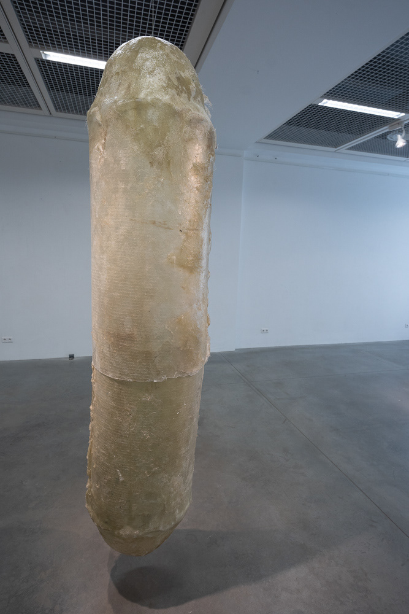
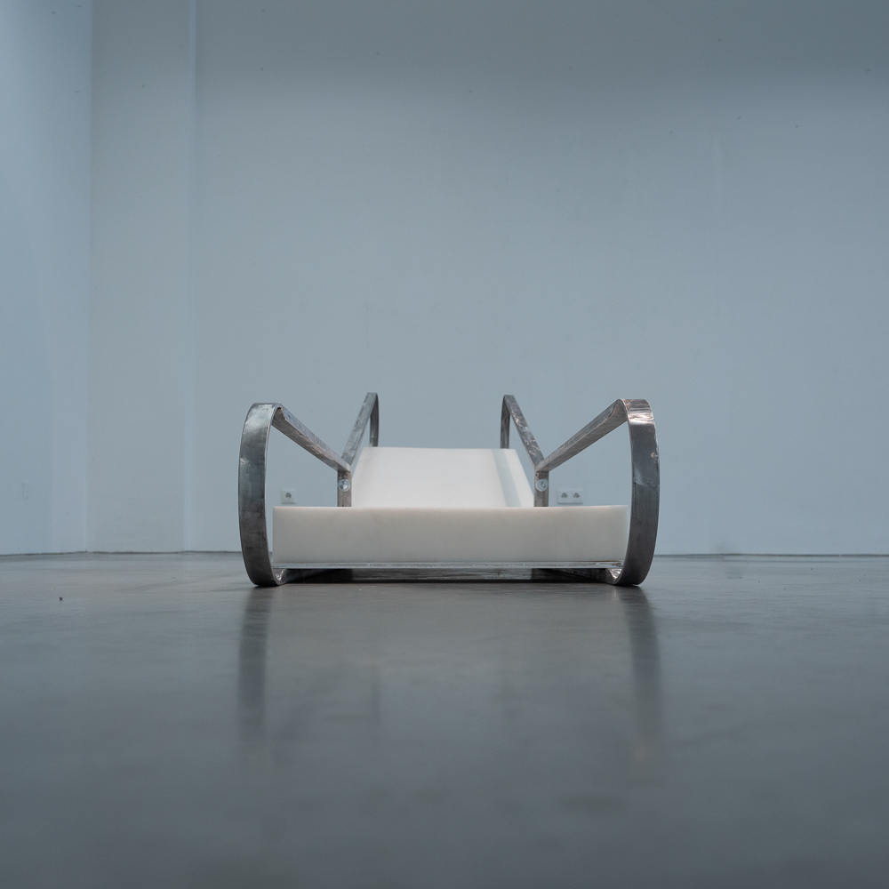

Artist
New media art, interaction design, painting, printmaking, sculpture and photography
Selected Works
Once Upon an Artist
At what point in my life and artistic career can I begin to call myself an artist? If I become an artist, can I ever lose that status? Once Upon an Artist is the whole of the Master's thesis exploring issues in self-identifying as an artist, and proposes the idea that the correct vocabulary and context (in this case - academic) is all that is required to call oneself an artist.

1. Capsule
Fibre glass
In the middle of the dark room - a large yellowish form. At first glance - it seems almost familiar. Large, cylindrical, but capped on both ends with hemispheres. The proportions so familiar, seen almost daily.. a pill! Yet there’s something not completely right - the form is too rough, too uneven. And then the color - somewhat see through, somewhat opaque - and with this strange yellowish tinge. The light catches each minor imperfection on the curved surface, but then past that - there’s something inside. Something… almost human?

2. Millennial Daybed
Wood, foam, fabric, digital display
A contemporary furniture piece that challenges traditional notions of rest and productivity in the digital age. The daybed serves as both functional furniture and conceptual commentary on modern living spaces.
3. miss you and think you're great
Arduino, Thermal Printer, Coin-acceptor, Receipt paper, plinth
A white rectangular plinth with a coin slot stands in the room. For 20¢, visitors receive a printed receipt containing fragments of personal conversations - intimate messages exploring connection, distance, and digital communication. The mechanical act of inserting a coin and receiving a printed message transforms private digital exchanges into physical, collectible artifacts.
"I'm not going to ask you to change for me"
"Honestly I just want to ask - are there any chances to keep this alive?"
4. Artificial Artist (thesis)
Written thesis document, 2021
The theoretical framework examining the construction of artistic identity through academic discourse. The thesis argues that the vocabulary and institutional context of art education are sufficient conditions for claiming the identity of "artist" - questioning the boundaries between becoming, being, and performing the role of an artist.
Other Works


About
Digital Designer, Artist, Photographer and Writer. Lithuanian born, expatriate. Graduated from Glasgow School of Art with a degree in Interaction Design.
My work explores the intersection of new media art, interactive technologies, and traditional artistic mediums. Through installations, projections, and photography, I investigate themes of identity, memory, preservation, and the relationship between humans and technology.
Press and Comments
"Nėra jokios meninės veiklos" / "There is no artistic activity" - Deimantas Narkevičius
- LRT Kultūros Diena on young digital artists
- Lrytas.lt: Vandenys
- Scotsman: New Dreams